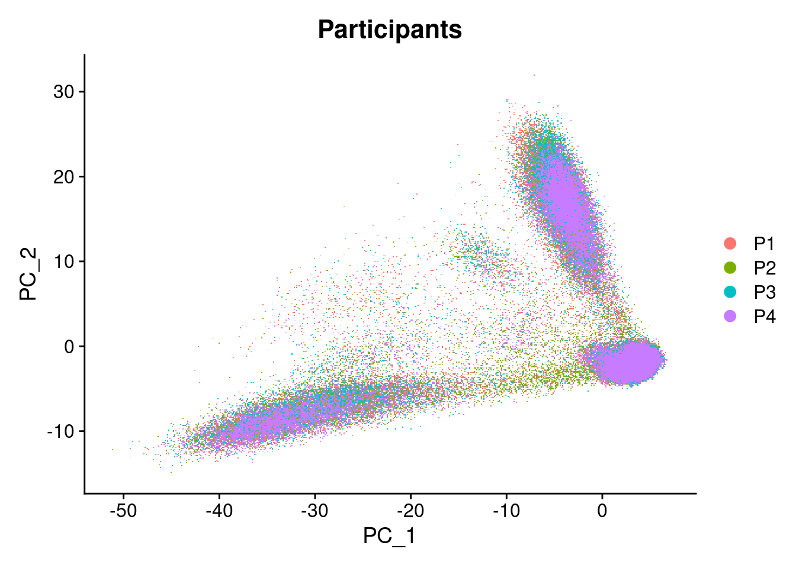
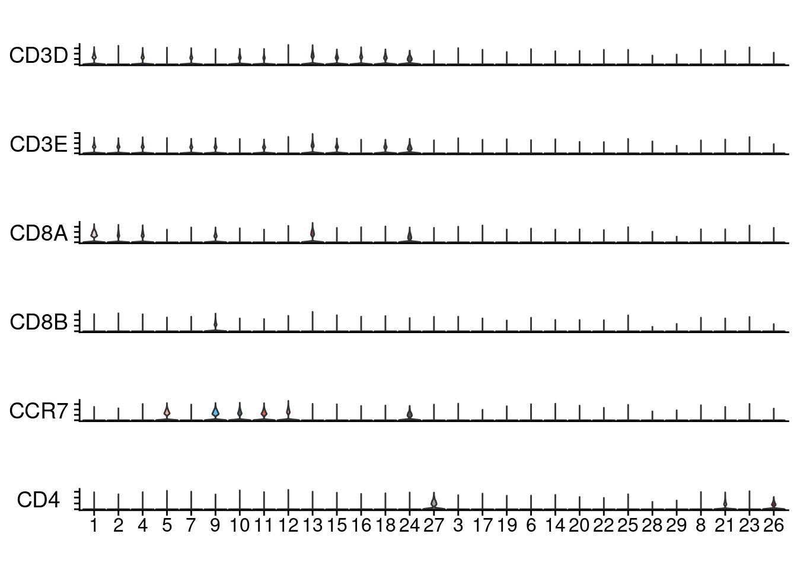
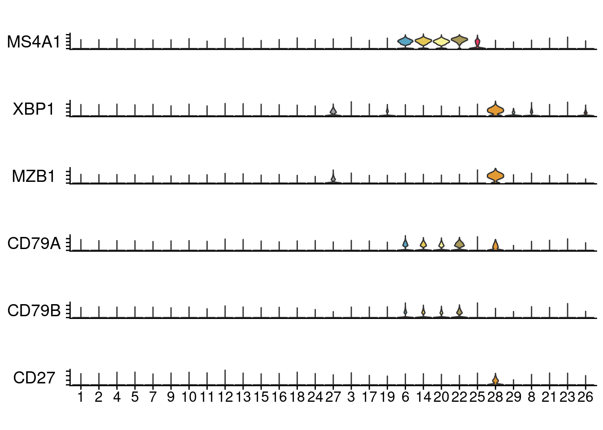

Batch effect correction
wangrong
2021/12/28
Last updated: 2022-01-10
Checks: 7 0
Knit directory: The-single-cell-epigenetic-and-transcriptional-landscape-of-immune-response-to-SARS-CoV-2-vaccine/
This reproducible R Markdown analysis was created with workflowr (version 1.7.0). The Checks tab describes the reproducibility checks that were applied when the results were created. The Past versions tab lists the development history.
Great! Since the R Markdown file has been committed to the Git repository, you know the exact version of the code that produced these results.
Great job! The global environment was empty. Objects defined in the global environment can affect the analysis in your R Markdown file in unknown ways. For reproduciblity it’s best to always run the code in an empty environment.
The command set.seed(20211228) was run prior to running the code in the R Markdown file. Setting a seed ensures that any results that rely on randomness, e.g. subsampling or permutations, are reproducible.
Great job! Recording the operating system, R version, and package versions is critical for reproducibility.
Nice! There were no cached chunks for this analysis, so you can be confident that you successfully produced the results during this run.
Great job! Using relative paths to the files within your workflowr project makes it easier to run your code on other machines.
Great! You are using Git for version control. Tracking code development and connecting the code version to the results is critical for reproducibility.
The results in this page were generated with repository version 02561e3. See the Past versions tab to see a history of the changes made to the R Markdown and HTML files.
Note that you need to be careful to ensure that all relevant files for the analysis have been committed to Git prior to generating the results (you can use wflow_publish or wflow_git_commit). workflowr only checks the R Markdown file, but you know if there are other scripts or data files that it depends on. Below is the status of the Git repository when the results were generated:
Untracked files:
Untracked: data/SAMPLE_INFORMATION.csv
Untracked: figure/
Untracked: site_libs/
Note that any generated files, e.g. HTML, png, CSS, etc., are not included in this status report because it is ok for generated content to have uncommitted changes.
These are the previous versions of the repository in which changes were made to the R Markdown (analysis/Batch-effect-correction.Rmd) and HTML (docs/Batch-effect-correction.html) files. If you’ve configured a remote Git repository (see ?wflow_git_remote), click on the hyperlinks in the table below to view the files as they were in that past version.
| File | Version | Author | Date | Message |
|---|---|---|---|---|
| Rmd | 02561e3 | WangRong423 | 2022-01-10 | Start my new project |
knitr::opts_chunk$set(message=FALSE, warning=FALSE)
library(Seurat)Attaching SeuratObjectlibrary(cowplot)
library(ggplot2)
library(Matrix)
library(dplyr)
Attaching package: 'dplyr'The following objects are masked from 'package:stats':
filter, lagThe following objects are masked from 'package:base':
intersect, setdiff, setequal, unionlibrary(umap)batch effects
View batch effects through direct Merge seurat objectView batch effects through direct Merge seurat object
batch_list=list("M1-1","M1-2","M1-3","M1-4","M1-5","M1-6","M1-7","M1-8","M1-9","M1-10","M2-1","M2-2","M2-3","M2-4","M2-5","M2-6","M2-7","M2-8","M2-9","M2-10","M3-1","M3-2","M3-3",
"M3-4","M3-5","M3-6","M3-7","M3-8","M3-9","M3-10","M5-1","M5-2","M5-3","M5-4","M5-5","M5-6","M5-7","M5-8","M5-9","M5-10")
pbmc_list <- list()
pbmc_listname=c("M1-1","M1-2","M1-3","M1-4","M1-5","M1-6","M1-7","M1-8","M1-9","M1-10","M2-1","M2-2","M2-3","M2-4","M2-5","M2-6","M2-7","M2-8","M2-9","M2-10","M3-1","M3-2","M3-3",
"M3-4","M3-5","M3-6","M3-7","M3-8","M3-9","M3-10","M5-1","M5-2","M5-3","M5-4","M5-5","M5-6","M5-7","M5-8","M5-9","M5-10")
for( i in 1:length(batch_list))
{
print(batch_list[[i]])
dir=paste0('/database/Results/0712_ATAC+RNA/percent.mt/',batch_list[[i]],'.rds')
pbmc_list[[i]]<-readRDS(dir)
list_dir=paste0('/database/Results/0712_ATAC+RNA/doubles/after_filter/all_',batch_list[[i]],'.csv')
print(list_dir)
lists<-read.table(list_dir,header=T,sep=',')
rownames(lists)<-lists$barcode
lists<-lists[,-1]
pbmc_list[[i]]$cell_type<-lists$cell_type
}
PBMCmerge <- merge(pbmc_list[[1]],pbmc_list[2:length(pbmc_list)])
PBMCmerge <- NormalizeData(PBMCmerge, normalization.method = "LogNormalize", scale.factor = 10000)
PBMCmerge <- FindVariableFeatures(PBMCmerge, selection.method = "vst", nfeatures = 5000)
PBMCmerge <- ScaleData(PBMCmerge,features=VariableFeatures(PBMCmerge))
PBMCmerge <- RunPCA(PBMCmerge, features = VariableFeatures(object = PBMCmerge))
PBMCmerge <- FindNeighbors(PBMCmerge, dims = 1:20)
PBMCmerge <- FindClusters(PBMCmerge, resolution = 0.9)
PBMCmerge <- RunUMAP(PBMCmerge, dims = 1:20)
PBMCmerge <- RunTSNE(PBMCmerge, dims = 1:20)
dev.off()
save(PBMCmerge,file="/database/Results/0712_ATAC+RNA/downstream_analysis/pbmc_merge.Rdata")Batch effect correction before
I get the batch effect correction before PC diagram:
Batch effect correction
Add participant ,timepoints and singlets for sample metadata
sample.list <- SplitObject(PBMCmerge, split.by = "orig.ident")
cellinfo<-subset(PBMCmerge@meta.data,select=c(orig.ident,percent.mt, run, cell_type))
pbmc <- CreateSeuratObject(PBMCmerge@assays$RNA@counts,meta.data = cellinfo)
Timepoints<-pbmc@meta.data$orig.ident
p1<-gsub('M1[-][0-9]', 'P1', Timepoints)
p2<-gsub('M2[-][0-9]', 'P2', p1)
p3<-gsub('M3[-][0-9]', 'P3', p2)
p4<-gsub('M5[-][0-9]', 'P4', p3)
p5<-gsub('0', '', p4)
pbmc@meta.data$Participants<-p5
t1<-gsub('M[0-9][-]1', 'Day0', Timepoints)
t2<-gsub('M[0-9][-]2', 'Day1', t1)
t3<-gsub('M[0-9][-]3', 'Day3', t2)
t4<-gsub('M[0-9][-]4', 'Day6', t3)
t5<-gsub('M[0-9][-]5', 'Day14', t4)
t6<-gsub('M[0-9][-]6', 'Day28', t5)
t7<-gsub('M[0-9][-]7', 'Day29', t6)
t8<-gsub('M[0-9][-]8', 'Day31', t7)
t9<-gsub('M[0-9][-]9', 'Day34', t8)
t10<-gsub('M[0-9][-]10', 'Day43', t9)
pbmc@meta.data$Timepoints<-t10
saveRDS(pbmc,file="/database/Results/0712_ATAC+RNA/downstream_analysis/filted_pbmc_merged.rds")clean_pbmc<-subset(pbmc,run == "M2-2",invert=TRUE)
clean_pbmc<-subset(pbmc,run == "M2-3",invert=TRUE)
saveRDS(clean_pbmc,file="/database/Results/0712_ATAC+RNA/downstream_analysis/all38_pbmc_merged.rds")clean_pbmc <- readRDS(file="/database/Results/0712_ATAC+RNA/downstream_analysis/all38_pbmc_merged.rds")
h_pbmc<-NormalizeData(clean_pbmc,verbose = FALSE)
h_pbmc<-FindVariableFeatures(h_pbmc,selection.method = "vst", nfeatures = 2000)
h_pbmc<-ScaleData(h_pbmc,verbose = FALSE)
h_pbmc<-RunPCA(h_pbmc,pc.genes = h_pbmc@var.genes, npcs = 20, verbose = FALSE)
saveRDS(h_pbmc,file="/database/Results/0712_ATAC+RNA/downstream_analysis/h_pbmc_merged.rds")h_pbmc<-readRDS(file="/database/Results/0712_ATAC+RNA/downstream_analysis/h_pbmc_merged.rds")
DimPlot(object = h_pbmc, reduction = "pca", pt.size = .1, group.by = "orig.ident")DimPlot(object = h_pbmc, reduction = "pca", pt.size = .1, group.by = "Timepoints")#DimPlot(object = h_pbmc, reduction = "pca", pt.size = .1, group.by = "cell_type")
DimPlot(object = h_pbmc, reduction = "pca", pt.size = .1, group.by = "Participants")
s_pbmc<-subset(h_pbmc,cell_type == "Singlet")single_pbmc<-NormalizeData(s_pbmc,verbose = FALSE)
single_pbmc<-FindVariableFeatures(single_pbmc,selection.method = "vst", nfeatures = 2000)
single_pbmc<-ScaleData(single_pbmc,verbose = FALSE)
single_pbmc<-RunPCA(single_pbmc,pc.genes = h_pbmc@var.genes, npcs = 20, verbose = FALSE)
single_pbmc <- single_pbmc %>% RunHarmony("orig.ident", plot_convergence = TRUE)
harmony_embeddings <- Embeddings(single_pbmc, 'harmony')Batch effect correction after
single_pbmc <- readRDS(file="/database/Results/0712_ATAC+RNA/downstream_analysis/10.12.harmony.Leiden.tsne.0.6.rds")
DimPlot(object = single_pbmc, reduction = "harmony", pt.size = .1, group.by = "orig.ident")DimPlot(object = single_pbmc, reduction = "harmony", pt.size = .1, group.by = "Timepoints")DimPlot(object = single_pbmc, reduction = "harmony", pt.size = .1, group.by = "Participants")The resulting batch-corrected matrix was used to build nearest neighbor graph using Seurat . Such nearest neighbor graph was then used to find clusters by Leiden . The cluster-specific marker genes were identified using the FindAllMarker function.
Clustering
We tried four resolutions and ended up annotating with 1.5, the best for clustering(10.12.harmony.Leiden.tsne.0.6.rds actually stored is 1.5 resolution RDS)
s_pbmc<- FindNeighbors(single_pbmc,reduction = "harmony", dims = 1:20)
s_pbmc_1<- FindClusters(s_pbmc,algorithm=4, method = "igraph",resolution = c(0.4, 0.6, 1.0, 1.5))
s_pbmc_1<-RunTSNE(s_pbmc_1,reduction = "harmony", dims = 1:20)
saveRDS(s_pbmc_1,file="/database/Results/0712_ATAC+RNA/downstream_analysis/10.12.harmony.Leiden.tsne.0.6.rds") Annotation
Annotation of the resulting clusters to cell types was based on the known markers.Violin plots, dot plots, and feature plots are used to show the results
gene=c("MS4A1","XBP1","MZB1","CD79A","CD79B")
for( i in 1:length(gene))
{
p1 <- FeaturePlot(single_pbmc, features = gene[[i]],reduction = "tsne")+annotate(geom = 'segment', y = Inf, yend = Inf, color = 'black', x = -Inf, xend = Inf, size = 1)+
annotate(geom = 'segment', x = Inf, xend = Inf, color = 'black', y = -Inf, yend = Inf, size = 0.5)
print(p1)
}gene1=c("CD3D", "CD3E", "CD8A", "CD8B","CCR7","CD4")
for( i in 1:length(gene1))
{
p2 <- FeaturePlot(single_pbmc, features = gene1[[i]],reduction = "tsne")+annotate(geom = 'segment', y = Inf, yend = Inf, color = 'black', x = -Inf, xend = Inf, size = 1)+
annotate(geom = 'segment', x = Inf, xend = Inf, color = 'black', y = -Inf, yend = Inf, size = 0.5)
print(p2)
}gene2=c("CST3", "LYZ")
for( i in 1:length(gene2))
{
p3 <- FeaturePlot(single_pbmc, features = gene2[[i]],reduction = "tsne")+annotate(geom = 'segment', y = Inf, yend = Inf, color = 'black', x = -Inf, xend = Inf, size = 1)+
annotate(geom = 'segment', x = Inf, xend = Inf, color = 'black', y = -Inf, yend = Inf, size = 0.5)
print(p3)
}
gene3=c("GNLY","NKG7")
for( i in 1:length(gene3))
{
p4 <- FeaturePlot(single_pbmc, features = gene3[[i]],reduction = "tsne")+annotate(geom = 'segment', y = Inf, yend = Inf, color = 'black', x = -Inf, xend = Inf, size = 1)+
annotate(geom = 'segment', x = Inf, xend = Inf, color = 'black', y = -Inf, yend = Inf, size = 0.5)
print(p4)
}lei_pbmc<- readRDS(file="/database/Results/0712_ATAC+RNA/downstream_analysis/10.13.order_idents_1.5_leiden.tsne.rds")
all_gene=c("CD3D", "CD3E", "CD8A", "CD8B","CCR7","CD4","GNLY","NKG7","MS4A1","XBP1","MZB1","CD79A","CD79B","CD27","GATA2","CST3", "LYZ")
DotPlot(lei_pbmc, features = all_gene,col.min=-2, col.max=2)+ RotatedAxis()+ scale_color_gradient2(high="red",mid = "lightgrey",low ="darkblue", midpoint = 0)T_gene=c("CD4", "CD8A", "CD8B","CCR7","LEF1","TCF7","CD69","AQP3","CCR6","CXCL6","FOXP3","NKG7","GZMK","CCL5","GZMB","GNLY","TYMS","MKI67")
DotPlot(lei_pbmc, features = T_gene,col.min=-2, col.max=2)+ RotatedAxis()+ scale_color_gradient2(high="red",mid = "lightgrey",low ="darkblue", midpoint = 0)B_gene=c("CD79A", "CD79B", "MS4A1","XBP1","MZB1","CD19","IGHD","IGHM","IL4R","TCL1A","CD27","CD38","IGHG","TBX21")
DotPlot(lei_pbmc, features = B_gene,col.min=-2, col.max=2)+ RotatedAxis()+ scale_color_gradient2(high="red",mid = "lightgrey",low ="darkblue", midpoint = 0)M_gene=c("CST3", "LYZ", "CD14","CD16","CLEC9A","CD1C","CLEC4C","CD123","CD34","CD68","CD163","FCGR3B", "CSF3R","KIT")
DotPlot(lei_pbmc, features = M_gene,col.min=-2, col.max=2)+ RotatedAxis()+ scale_color_gradient2(high="red",mid = "lightgrey",low ="darkblue", midpoint = 0)library(Seurat)
library(ggplot2)
modify_vlnplot <- function(obj, feature, pt.size = 0, plot.margin = unit(c(-0.75, 0, -0.75, 0), "cm"),...) {
p <- VlnPlot(obj, features = feature, pt.size = pt.size, ... ) +
xlab("") + ylab(feature) + ggtitle("") +
theme(legend.position = "none",
axis.text.x = element_blank(),
axis.text.y = element_blank(),
axis.ticks.x = element_blank(),
axis.ticks.y = element_line(),
axis.title.y = element_text(size = rel(1), angle = 0, vjust = 0.5),
plot.margin = plot.margin )
return(p)
}
StackedVlnPlot <- function(obj, features, pt.size = 0, plot.margin = unit(c(-0.75, 0, -0.75, 0), "cm"), ...) {
plot_list <- purrr::map(features, function(x) modify_vlnplot(obj = obj,feature = x, ...))
plot_list[[length(plot_list)]]<- plot_list[[length(plot_list)]] +
theme(axis.text.x=element_text(), axis.ticks.x = element_line())
p <- patchwork::wrap_plots(plotlist = plot_list, ncol = 1)
return(p)
}
my36colors <- c('#E5D2DD', '#53A85F', '#F1BB72', '#F3B1A0', '#D6E7A3', '#57C3F3', '#476D87',
'#E95C59', '#E59CC4', '#AB3282', '#23452F', '#BD956A', '#8C549C', '#585658',
'#9FA3A8', '#E0D4CA', '#5F3D69', '#C5DEBA', '#58A4C3', '#E4C755', '#F7F398',
'#AA9A59', '#E63863', '#E39A35', '#C1E6F3', '#6778AE', '#91D0BE', '#B53E2B',
'#712820', '#DCC1DD', '#CCE0F5', '#CCC9E6', '#625D9E', '#68A180', '#3A6963',
'#968175')
library(RColorBrewer)
b1<-brewer.pal(9, "BuGn")
b2<-brewer.pal(9,"Blues")
b3<-brewer.pal(9,"Oranges")
b4<-brewer.pal(9,"Purples")
b5<-brewer.pal(9,"Paired")
b6<-brewer.pal(13,"Paired")
b7<-brewer.pal(8,"Set2")
b8<-brewer.pal(8,"YlOrBr")
c<-c(b1[c(1,3,5,7,9)],b2[c(2,4,6,8)],b3,b4,b5[c(9,10)])
DimPlot(lei_pbmc, reduction = "tsne", label = TRUE, pt.size = .5,cols=c)c<-c(b8[c(1,3,5)],b2[c(3,4,5,6)],b6,b7)
gene=c("MS4A1","XBP1","MZB1","CD79A","CD79B","CD27")
gene1=c("CD3D", "CD3E", "CD8A", "CD8B","CCR7","CD4")
gene2=c("CST3", "LYZ")
gene3=c("GNLY","NKG7")
StackedVlnPlot(lei_pbmc, gene1, pt.size=0, cols=my36colors)+ RotatedAxis()
StackedVlnPlot(lei_pbmc, gene, pt.size=0, cols=my36colors)+ RotatedAxis()
StackedVlnPlot(lei_pbmc,c("CST3", "LYZ","GNLY","NKG7","CYTL1","GATA2"), pt.size=0, cols=my36colors)+ RotatedAxis()My_levels <- c('1','2','4','5','7','9','10','11','12','13','15','16','18','24','27','3','17','19','6','14','20','22','25','28','29','8','21','23','26')
Idents(lei_pbmc) <- factor(Idents(lei_pbmc), levels= My_levels)
new.cluster.ids <- c("CD8+ CLT", "CD8+ CLT", "CD8+ Tem", "CD4+ naïve", "CD4+ Tem", "CD8+ naïve", "CD4+ Treg", "CD4+ naïve", "CD4+ naïve", "CD8+ CLT", "Th1/Th17", "MAIT", "CD4+ Treg", "CD4+ naïve", "Plasmacytoid DC", "NK", "NK", "NK", "naïve B", "naïve B", "memery B", "memery B", "naïve B", "Plasmablasts","HSC","CD14+ Mono","CD16+ Mono","Intermediate Mono","Myeloid DC")
rename_pbmc <- RenameIdents(lei_pbmc, new.cluster.ids)
b6<-brewer.pal(12,"Paired")
b7<-brewer.pal(8,"Set2")
c<-c(b6[c(1,2,3,4,5,7,8,9,10,11,12)],b7)
DimPlot(rename_pbmc, reduction = "tsne", label = TRUE, pt.size = .5,cols=c)
saveRDS(rename_pbmc,"/database/Results/0712_ATAC+RNA/downstream_analysis/10.20.annotation_pbmc.rds")rename_pbmc <- readRDS("/database/Results/0712_ATAC+RNA/downstream_analysis/10.20.annotation_pbmc.rds")
b6<-brewer.pal(12,"Paired")
b7<-brewer.pal(8,"Set2")
c<-c(b6[c(1,2,3,4,5,7,8,9,10,11,12)],b7)
DimPlot(rename_pbmc, reduction = "tsne", label = TRUE, pt.size = .5,cols=c)DimPlot(rename_pbmc, reduction = "tsne", split.by = "Timepoints", pt.size = .3,cols=c,combine = F, ncol = 2)[[1]]
DimPlot(rename_pbmc, reduction = "tsne", split.by = "Participants", pt.size = .3,cols=c,combine = F, ncol = 2)[[1]]
sessionInfo()R version 4.1.1 (2021-08-10)
Platform: x86_64-pc-linux-gnu (64-bit)
Running under: Ubuntu 20.04.3 LTS
Matrix products: default
BLAS: /usr/lib/x86_64-linux-gnu/blas/libblas.so.3.9.0
LAPACK: /usr/lib/x86_64-linux-gnu/lapack/liblapack.so.3.9.0
locale:
[1] LC_CTYPE=en_US.UTF-8 LC_NUMERIC=C
[3] LC_TIME=en_US.UTF-8 LC_COLLATE=en_US.UTF-8
[5] LC_MONETARY=en_US.UTF-8 LC_MESSAGES=en_US.UTF-8
[7] LC_PAPER=en_US.UTF-8 LC_NAME=C
[9] LC_ADDRESS=C LC_TELEPHONE=C
[11] LC_MEASUREMENT=en_US.UTF-8 LC_IDENTIFICATION=C
attached base packages:
[1] stats graphics grDevices utils datasets methods base
other attached packages:
[1] RColorBrewer_1.1-2 umap_0.2.7.0 dplyr_1.0.7 Matrix_1.4-0
[5] ggplot2_3.3.5 cowplot_1.1.1 SeuratObject_4.0.2 Seurat_4.0.3
[9] workflowr_1.7.0
loaded via a namespace (and not attached):
[1] Rtsne_0.15 colorspace_2.0-2 deldir_1.0-6
[4] ellipsis_0.3.2 ggridges_0.5.3 rprojroot_2.0.2
[7] fs_1.5.2 rstudioapi_0.13 spatstat.data_2.1-0
[10] farver_2.1.0 leiden_0.3.9 listenv_0.8.0
[13] ggrepel_0.9.1 RSpectra_0.16-0 fansi_0.5.0
[16] codetools_0.2-18 splines_4.1.1 knitr_1.37
[19] polyclip_1.10-0 jsonlite_1.7.2 ica_1.0-2
[22] cluster_2.1.2 png_0.1-7 uwot_0.1.11
[25] shiny_1.7.1 sctransform_0.3.2 spatstat.sparse_2.1-0
[28] compiler_4.1.1 httr_1.4.2 assertthat_0.2.1
[31] fastmap_1.1.0 lazyeval_0.2.2 later_1.2.0
[34] htmltools_0.5.2 tools_4.1.1 igraph_1.2.10
[37] gtable_0.3.0 glue_1.4.2 RANN_2.6.1
[40] reshape2_1.4.4 Rcpp_1.0.7 scattermore_0.7
[43] jquerylib_0.1.4 vctrs_0.3.8 nlme_3.1-153
[46] lmtest_0.9-39 xfun_0.29 stringr_1.4.0
[49] globals_0.14.0 ps_1.6.0 mime_0.12
[52] miniUI_0.1.1.1 lifecycle_1.0.1 irlba_2.3.3
[55] goftest_1.2-2 future_1.23.0 getPass_0.2-2
[58] MASS_7.3-54 zoo_1.8-9 scales_1.1.1
[61] spatstat.core_2.3-0 promises_1.2.0.1 spatstat.utils_2.3-0
[64] parallel_4.1.1 yaml_2.2.1 reticulate_1.22
[67] pbapply_1.5-0 gridExtra_2.3 sass_0.4.0
[70] rpart_4.1-15 stringi_1.7.6 highr_0.9
[73] rlang_0.4.12 pkgconfig_2.0.3 matrixStats_0.61.0
[76] evaluate_0.14 lattice_0.20-44 ROCR_1.0-11
[79] purrr_0.3.4 tensor_1.5 labeling_0.4.2
[82] patchwork_1.1.1 htmlwidgets_1.5.4 processx_3.5.2
[85] tidyselect_1.1.1 parallelly_1.30.0 RcppAnnoy_0.0.19
[88] plyr_1.8.6 magrittr_2.0.1 R6_2.5.1
[91] generics_0.1.1 DBI_1.1.2 withr_2.4.3
[94] mgcv_1.8-38 pillar_1.6.4 whisker_0.4
[97] fitdistrplus_1.1-6 survival_3.2-12 abind_1.4-5
[100] tibble_3.1.6 future.apply_1.8.1 crayon_1.4.2
[103] KernSmooth_2.23-20 utf8_1.2.2 spatstat.geom_2.2-2
[106] plotly_4.10.0 rmarkdown_2.11 grid_4.1.1
[109] data.table_1.14.2 callr_3.7.0 git2r_0.29.0
[112] digest_0.6.29 xtable_1.8-4 tidyr_1.1.4
[115] httpuv_1.6.4 openssl_1.4.6 munsell_0.5.0
[118] viridisLite_0.4.0 bslib_0.3.1 askpass_1.1